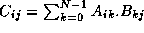

![[DBPP]](pictures//asm_color_tiny.gif)


![[Search]](pictures//search_motif.gif)
Next: Chapter Notes
Up: 2 Designing Parallel Algorithms
Previous: 2.9 Summary
Some of the exercises in this chapter ask you to design parallel
algorithms; others ask you to implement algorithms described in the
text or designed by you. It is important to attempt both types of
problem. Your implementations should use one of the tools described
in Part II.
-
The component labeling problem in image processing is defined as
follows. We are given a two-dimensional array of pixels valued 0 or
1. The 1-pixels must be labeled in such a way that two pixels have
the same label if and only if they are in the same connected
component. Two 1-pixels are in the same connected component if there
is a path of contiguous 1-pixels linking them together. Two pixels
are contiguous if they are adjacent vertically or horizontally.
Develop a parallel algorithm based on the following approach. First,
each 1-pixel is assigned a unique label (for example, its address).
Then, each 1-pixel is updated to contain the minimum of its current
label and those of its four neighbors. The second step is repeated
until all adjacent 1-pixels have the same label.
-
Modify the algorithm in Exercise 1 to deal with the
situation in which pixels are also contiguous when adjacent diagonally.
-
Implement the algorithm developed in Exercise 1 and
measure its performance for a variety of array sizes and processor
counts.
-
A compiler consists of six distinct stages. The tokenizer translates
characters (input from one or more files) into tokens. The parser
translates tokens into procedures. The canonicalizer translates
procedures into a canonical form. The encoder translates procedures
in this canonical form into low-level code. The optimizer rewrites
this low-level code. Finally, the assembler generates object code.
Apply domain and functional decomposition techniques to obtain two
different parallel algorithms for the compiler. Compare and contrast
the scalability and expected efficiency of the two algorithms.
-
Design and implement a parallel algorithm for a 1-D finite-difference
algorithm with a three-point stencil. Study the performance of the
resulting program as a function of problem size and processor count,
assuming one task per processor.
-
Extend the algorithm and program developed in Exercise 5
to incorporate a simple convergence test: terminate execution when the
difference between values computed at successive steps is less than a
specified threshold for all grid points.
-
Design and implement parallel algorithms based on both 1-D and 2-D
decompositions of a 2-D finite-difference algorithm with a five-point
stencil. Study the performance of the resulting programs as a
function of problem size and processor count, assuming one task per
processor.
-
Using a parallel tool such as CC++
or Fortran M that supports
multiple tasks per processor, study the performances of the programs
developed in Exercises 5 and 7 for a fixed
number of processors as the number of tasks is varied.
-
Implement the various parallel summation algorithms described in
Section 2.3.2, and study their performance as a
function of problem size and processor count. Account for any
differences.
-
Design parallel algorithms for the Gauss-Seidel method described in
Section 2.3.1, for both 1-D and 2-D grids.
-
Implement the parallel Gauss-Seidel algorithms of
Exercise 10. Quantify the available parallelism (a) in a
single time step and (b) when performing T
time steps in a
pipelined fashion.
-
The branch-and-bound search algorithm (Section 2.7)
replicates the data defining the search problem on every processor.
Is it worthwhile distributing these data? Explain.
-
An all-solutions search problem explores a search tree similar to that
shown in Figure 2.28 in its entirety without the benefit
of pruning. A function is applied to each leaf-node to determine
whether it is a solution, and solutions are collected. Develop a
parallel algorithm for this problem. Initially, assume that the cost
of a node evaluation is a constant and that the tree is of uniform and
known depth; then relax these assumptions.
-
A single-solution search is like the all-solutions search of
Exercise 13, except that it terminates when a single
solution is found. Develop a parallel algorithm for this problem.
-
Design a variant of the ``partial replication'' Fock matrix
construction algorithm (Section 2.8) that can execute on
P
processors, where P>N
.
-
Design a variant of the ``partial replication'' Fock matrix
construction algorithm (Section 2.8) that reduces
communication requirements to less than two messages per task.
Characterize the savings that can be achieved by this scheme as a
function of available memory. Hint
: Cache data.
-
Develop an analytic model for the maximum performance possible in a
branch-and-bound search algorithm in which tasks poll a central manager
for an up-to-date search bound.
-
Implement the branch-and-bound search algorithm studied in
Exercise 17 and compare its performance with that of your model.
Propose and investigate refinements to the centralized algorithm.
-
A deficiency of the parallel branch-and-bound search algorithm of
Section 2.7 is that it does not provide a mechanism for
informing workers when a search is complete. Hence, an idle worker
will never stop requesting work from other workers. Design a
mechanism that ensures that all workers cease execution some finite
time after the last solution is reported.
-
Discuss the circumstances under which a random mapping of tasks to
processors might be expected to be effective in the branch-and-bound
search problem. When might it be expected to be ineffective?
-
Discuss the relative advantages and disadvantages of random and cyclic
mappings of tasks to processors in the partial replication Fock matrix
construction algorithm of Section 2.8.2.
-
Educate yourself about the basic operations employed in a relational
database, and design parallel algorithms that could be used to perform
these operations when a database is distributed over the processors of
a multicomputer.
-
Without referring to Section 4.6, design parallel
algorithms based on both 1-D and 2-D decompositions for the matrix
multiplication problem, in which we compute C=A.B
, where
.
Next: Chapter Notes
Up: 2 Designing Parallel Algorithms
Previous: 2.9 Summary
© Copyright 1995 by Ian Foster